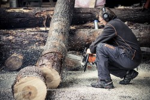
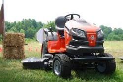
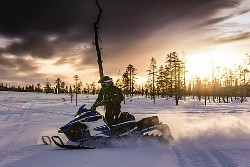

Välkommen till Skog och Trädgård i Junsele AB
Skog & Trädgård i Junsele AB, är försäljare av alla sorters verktyg och redskap som kan tänkas användas inom skogs- och trädgårdsskötsel. Även diverse järnhandel, färg och byggvaror.
Sortiment
Skog
I vår butik finns nästan allt som man kan behöva i skogen. Vi säljer produkter från dem stora märkena Stihl och Husqvarna. Välkommen in till butiken för trevliga samtal om den underbara skogen.

Trädgård
I vår butik finns nästan allt som man kan behöva i Trädgården. Vi säljer produkter från dem stora märkena Stihl, Husqvarna och det finns även många andra trädgårdsartiklar i butiken av andra märken.

Fritid
I vår butik finns nästan allt som man kan behöva på fritiden.
Vi har ett stort utbud för sommar- och vinterfiske. Även ett utbud av verktyg, knivar och yxor.

Verkstad
Vi servar fyrhjulingar, motorsågar, röjsågar, snöslungor och snöskotrar. Vi är en auktoriserad verkstad för Stihl och Husqvarna men vi servar och reparerar även alla andra märken.
Öppettider
Måndag: 07:00–17:00
Tisdag: 07:00–17:00
Onsdag: 07:00–17:00
Torsdag: 07:00–17:00
Fredag: 07:00–17:00
Lördag: 10:00–14:00
Söndag: STÄNGT
Verkstad: Måndag-Fredag: 07.00-16.00
Kontakta oss
Verkstad och butik: skogtradgard@hotmail.com
Kontoret: skogotrad@telia.com
Telefonnummer: 0621-10055